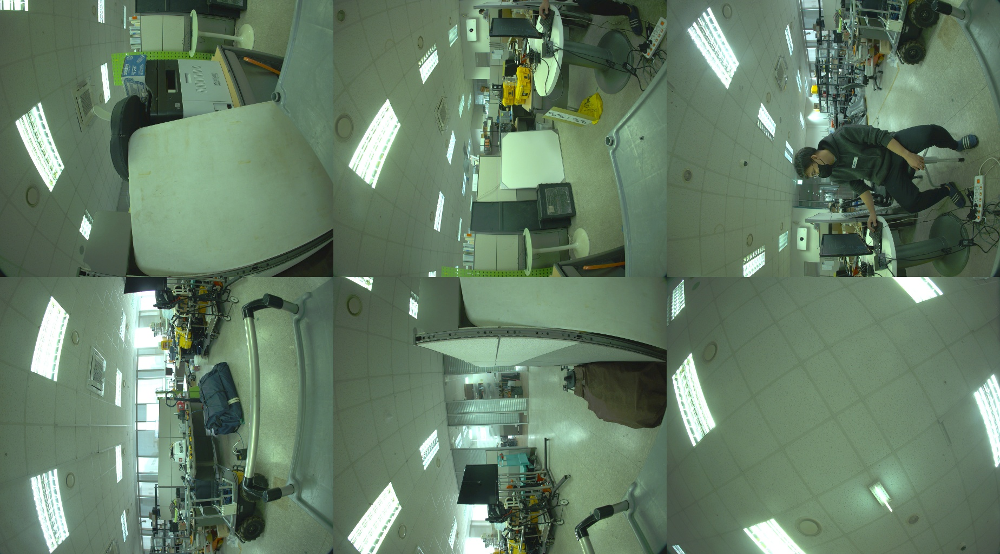
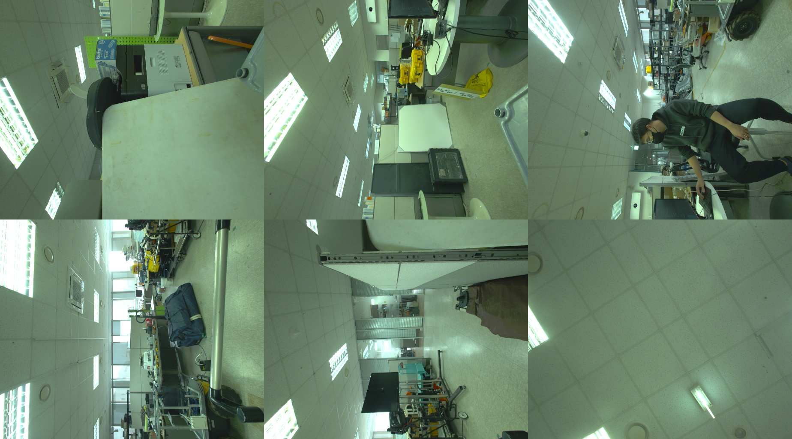
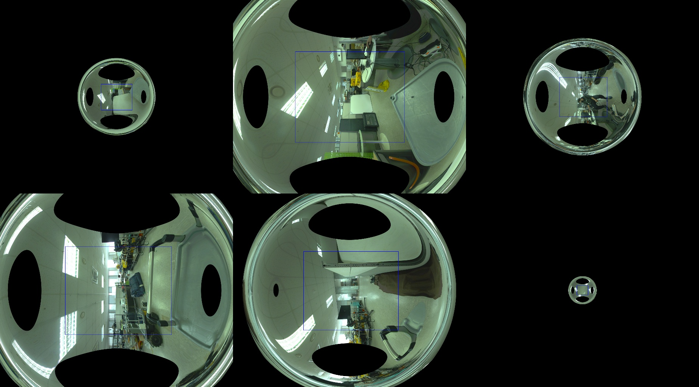
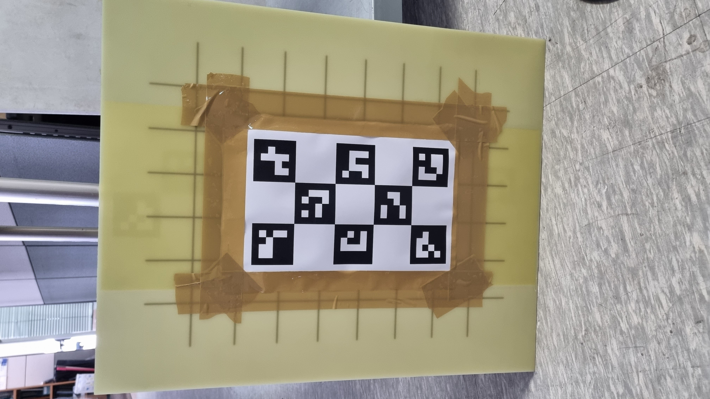
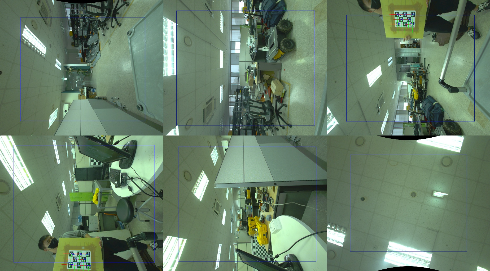
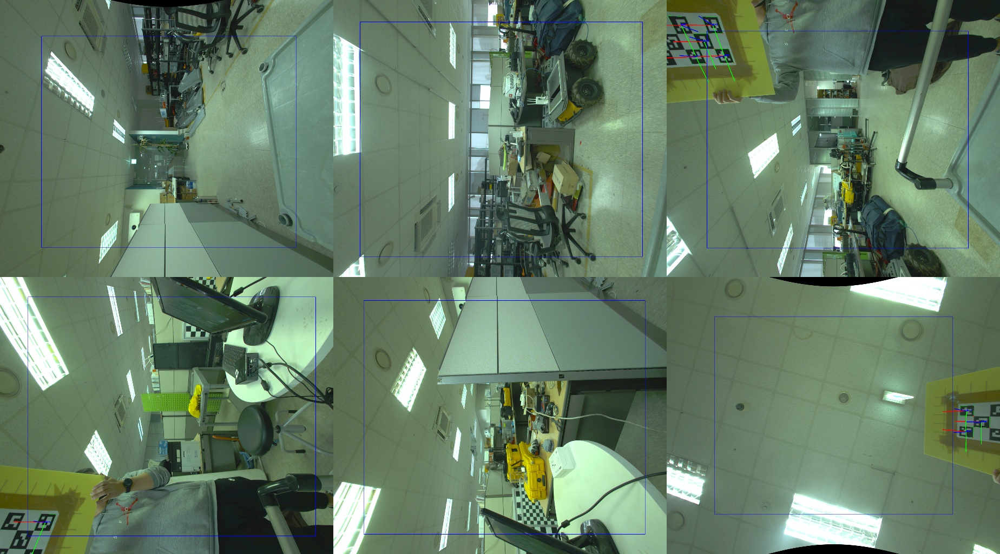
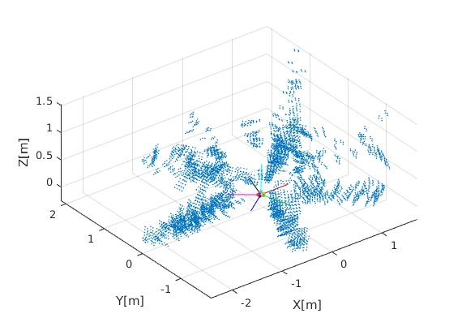
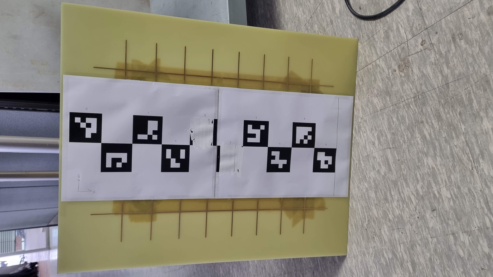
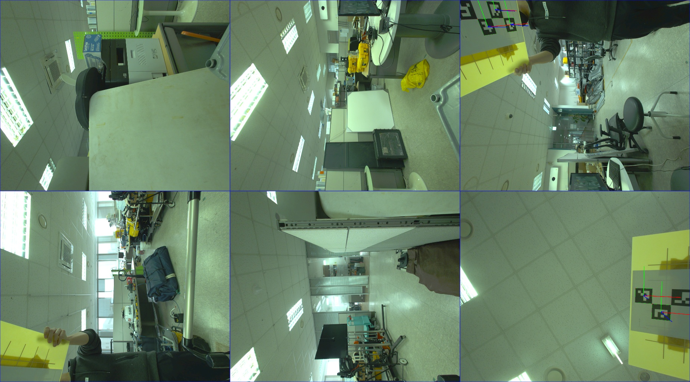
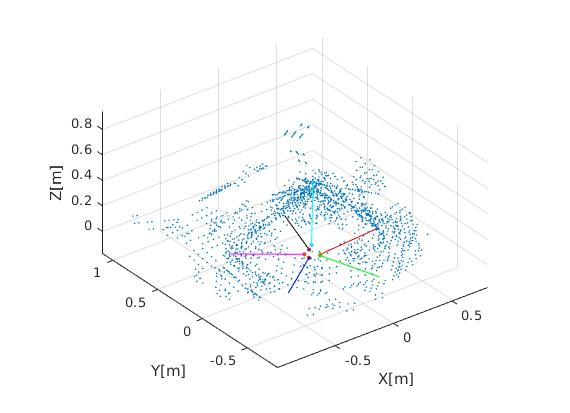

Extrinsic calibration of omnidirectional camera using factor graph
Omnidirectional camera (이하 omni camera) 의 extrinsic calibration 을 하는데 있어 “대충 겹치겠지” 생각을 하고 진행을 했으나.. 생각보다 많이 겹쳐지지 않고, 또한 기존 OpenCV나 Caltech calibration toolbox에서 multi-camera system에서 이러한 경우에 대해 calibration하는 방법에 대해 많이 나와있지 않은 것 같아 개인적으로 개발하게 되었다. 우선 사용한 omni camera는 다음과 같다.

Omni camera는 Flir사의 Ladybug 5+ 모델로, horizontal 방향으로 5개의 camera가 있으며, 각각 광각 렌즈를 탑재하여 조금씩 겹쳐지게 되어있으며 원본 영상은 다음과 같다.

위의 영상의 첫번째 행 왼쪽부터 오른쪽까지 camera 0, 1, 2의 영상이며 두번째 행의 왼쪽부터 오른쪽까지가 3, 4, 5의 영상이다. camera 0, 1, 2, 3, 4가 horizontal camera들이며, camera 5가 위를 바라보고 있다.
이를 이대로 사용하게 되면 광각렌즈로부터 오는 distortion이 심해 두 camera가 겹쳐지는 부분에 대한 marker 인식이 잘 안될 뿐더러 인식이 되더라도 잘못된 값을 나타내었다. 따라서 우선 undistort를 진행하고 calibration을 하기로 하였다.

각 camera에 대해 intrinsic calibration을 진행한 후 undistortion을 한 결과이다. 생각보다 겹쳐지는 부분이 거의 없다! OpenCV의 getOptimalNewCameraMatrix 함수를 통해 잘리지 않은 부분도 나타나게 해주는 새로운 camera matrix를 구할 수 있었다.
cv::getOptimalNewCameraMatrix(Camera matrix from intrinsic calibration,
Distortion coefficient from intrinsic calibration,
Input image size,
alpha,
Output image size,
Valid ROI,
Center principal point (t/f));
위의 코드에서 alpha값은 0에서 1 사이의 수인데, 0에 가까워질수록 distortion이 없는 부분만 잘라서 보여주며, 1에 가까워질수록 원본 영상이 모두 나타난다. 위의 영상이 0일때의 영상이며 1일때의 영상은 다음과 같다.

각 camera가 비슷할꺼라 생각했는데 아니었다! (생각해보면 당연하다. 위를 보는 것은 각 camera와 90도나 차이나니… horizontal 방향으로도 모두 차이가 있음을 알 수 있다.) 각 영상에서 네모로 쳐진 부분이 위의 코드에서 valid roi에 대한 부분이며, 이를 잘라내면 0일때의 영상이 나타난다.
여튼, 일단 겹쳐지는 부분이 있어야 했기에 울며 겨자먹기로 distortion effect가 조금 덜하기를 바라며 alpha를 0.3으로 해서 calibration을 진행했다. 영상간 overlapping region이 굉장히 작았기에, 기존의 checkerboard 기반으로 진행하면 각 영상에서 checkerboard가 모두 보이지 않아 영상간 correspondence가 나타나지 않아 대신 Aruco marker를 기반으로 marker detection을 통해 correspondence를 찾기로 하였다.


각기 다른 marker id를 가진 Aruco marker 8개를 평평한 판에 부착하여 영상을 취득하였다. Valid ROI 내부에 아주 조금이나마 겹쳐지는 것으로 보이지만, 광각이 더 넓은 top view와 겹쳐지는 부분을 찾는건 아래 이미지와 같이 더 답이 없었다.

Camera 5와 다른 camera간의 extrinsic calibration을 위해 마커를 겹쳐지게 하는건 valid roi 외부로 겹쳐지게 하는 수 밖에 없었다. 여하튼 이렇게 얻어진 correspondence들을 통해 extrinsic calibration을 진행해야 되는데, OpenCV를 이용해 extrinsic calibration을 하는 방법은 stereo camera calibration에 대한 방법만 친절히 설명되어있으며, 3대 이상의 camera에 대해 calibration하는 방법에 대해 진행한 경우는 많이 보지 못하였다. 그 또한 모든 camera가 동시에 calibration board를 detect한 경우에만 가능한 것 처럼 보였다.
그래서 Factor graph를 사용해보기로 하였다. SLAM에서 measurement를 기반으로 state와 landmark를 update를 하는 방법과 비슷하면서도 다르게, state는 6개의 camera로 고정해놓고 observation들을 다 때려 넣은 뒤 optimization하는 방식이다. (Bundle adjustment에 더 가깝다고 볼 수 있다. tool만 factor graph를 사용한거지..) Factor graph는 gtsam을 사용하여 구현하였다.
Initial들은 다음과 같다.
- Camera state initials: 초기 camera state들은 camera centre가 모두 겹쳐져있고, camera 0을 (1, 0, 0) 향하게 한 뒤 0부터 4까지 360도를 5로 나누어 각각 5개 방향으로 보게 한 뒤 camera 5를 (0, 0, 1)로 향하게 하였다. 각 camera의 z 방향을 앞서 언급한 것과 같이 설정한 뒤 x, y 방향은 camera 영상을 보며 맞춰줬다. (gtsam::Pose3)
- Landmark initials: Landmark들은 marker의 각 corner점들의 3차원 point로 사용하였다 (gtsam::Point3). 먼저 영상에서 detect된 마커를 기반으로 solvepnp를 통해 마커의 camera 상대위치를 구한 다음, camera pose를 이용해 global 좌표계에서의 marker corner점들을 계산해 initial 로 넣었다.
Factor들은 다음과 같다.
- Projection factor: Landmark들이 각 camera 영상에 어디에 위치했는지의 measurement를 이용해 factor를 구성하였다. (gtsam::GenericProjectionFactor)
- Range factor: 한개의 marker에 대해 4개의 corner점간의 거리를 알기에 range factor를 사용하였다. 각 마커마다 6개의 factor를 사용했는데, corner 0부터 3에 대해 0-1, 1-2, 2-3, 3-0, 0-2, 1-3 이런식으로 global space에서의 거리를 지정해주었다.
Range factor를 사용하기 전, Vladlen Koltun 박사님 아래에서 일하시는 이분이 하신 일의 방법에서 BetweenFactorPoint3를 이용해봤는데, 이는 world 좌표계에서 각 점들의 상대위치를 fix해버리는 방식이라 적합하지 않았다.

Camera 0부터 5는 각각 빨간색 초록색 파란색 보라색 검은색 시안(Cyan)색으로 표현되어있으며, 선분의 끝의 점들이 camera centre를 나타낸다. Camera centre가 겹쳐지지 않기에 완벽한 panorama image가 생성되지 않음을 알 수 있다.
여기까지 결과가 대충 잘 나온거 같은데, 아무래도 valid roi 밖에서 detect된 부분이 여전히 찝찝했다. 그래서 camera가 겹쳐지지 않는 경우에도 calibration을 진행할 수 있을까 라는 아이디어로부터 출발해 다음과 같이 실행하였다.
우선 calibration board의 길이를 조금 더 늘려봤다.

위에서부터 0, 1, 2, …, 9의 code를 가진 marker들로 만들었는데, A4용지 두개로 하다보니 중간에 치수가 안맞게 나와 4와 5는 화이트로 지웠다.
Camera FOV가 겹쳐지지 않더라도, 치수를 알고 있는 board를 사용함으로서 같은 점을 보지 않더라도 marker간 거리를 이용해 factor를 걸어주는 방식으로 하였으며, 예시로 camera 0에서 marker 0, camera 5에서 marker 9만 보인다고 하더라도 camera간 extrinsic parameter를 추정할 수 있게 하였다.
전체 6개 camera에서 마커가 detect된 camera의 갯수가 2개 이상일 경우 measurement를 넣는 방식으로 진행하였다.
여기서 marker간 거리로만 distance factor를 줄 경우 같은 평면에 있다라는 점을 활용하지 못하기에, camera pose 이와의 board pose를 노드로 추가하고 board pose에서 바라본 각 marker corner의 점의 3차원 위치에 대한 factor를 추가하는 방식으로 진행하였다.
Measurement가 3차원 coordinates인 factor가 없기에 새로 만들까 싶었지만, 시간상 원래 존재하는 BearingRangeFactor를 활용해 board와 landmark (marker corner)간 factor를 형성하였다. 여기서 정확히 BearingRangeFactor가 아닌 뭔가 solid한 constraint를 주는게 원해 맞는데, 일단 measurement noise를 아주 작게 설정하고 진행하였다.
Initial들은 다음과 같다.
- Camera state initials
- Landmark Initials
- (new) Board pose initials: 각 camera에서 detect된 marker의 relative pose를 활용해 camera에서 바라본 board 중앙의 relative pose를 계산하였다.
Factor들은 다음과 같다.
- Projection factor
- (new) Landmark measurement factors from the board : board 좌표계에서 각 corner point들이 z=0이라는 점을 활용해 BearingRangeFactor를 이용하여 factor로 연결하였다.
따라서 이전에는 camera 노드와 landmark들이 직접적으로 연결된 반면, 이번에는 camera-board 간 relative pose factor, board-landmark 간 bearing range factor, landmark-camera간 projection factor로 형성하였다.
이번에는 alpha값을 0으로 하여 distortion이 없는 부분만 활용하여 진행했다.

Calibration board를 길게 함으로서 첫번째와 다르게 measurement들이 모두 distortion이 없는 부분들에만 있음을 볼 수 있다.(편안)
결과는 다음과 같다.

영상을 더 찍어야 되는데, 1000장이 넘어가는 첫번째 실험에 비해 두번째 실험은 300장정도밖에 찍지 못해 landmark 수가 훨씬 적다.
다음 단계로 각 방법에 대한 reprojection error에 대해 분석을 해볼 예정